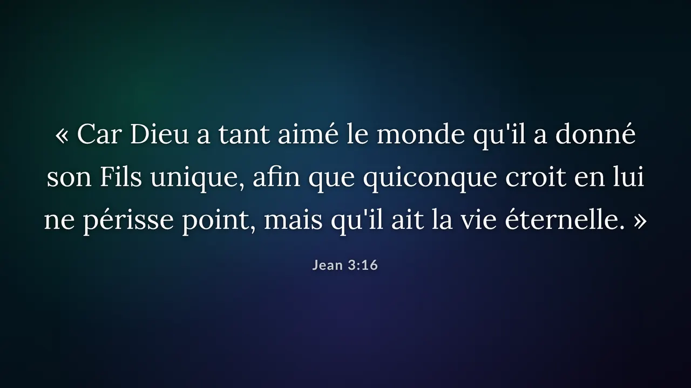
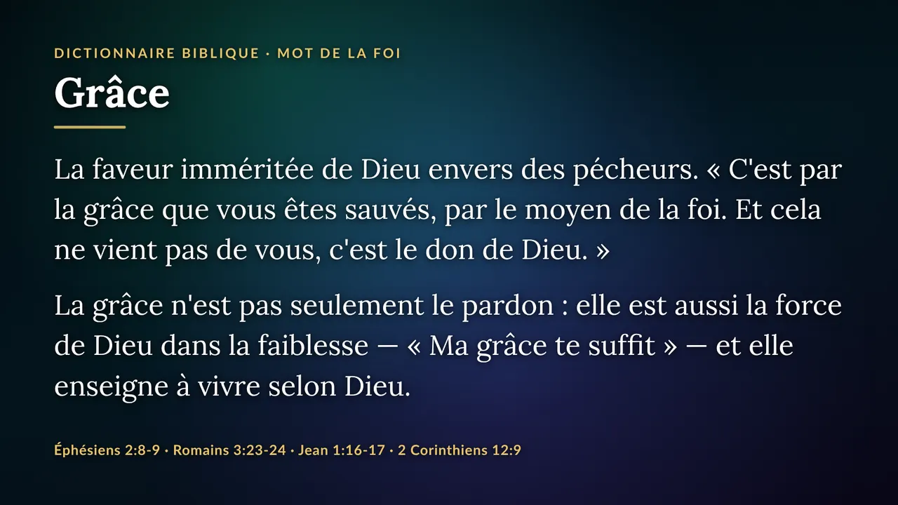
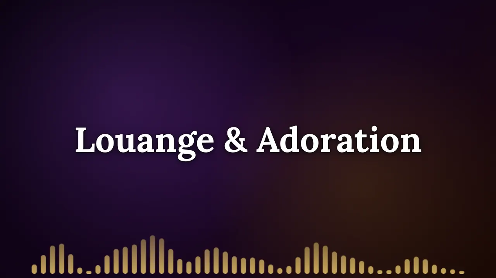
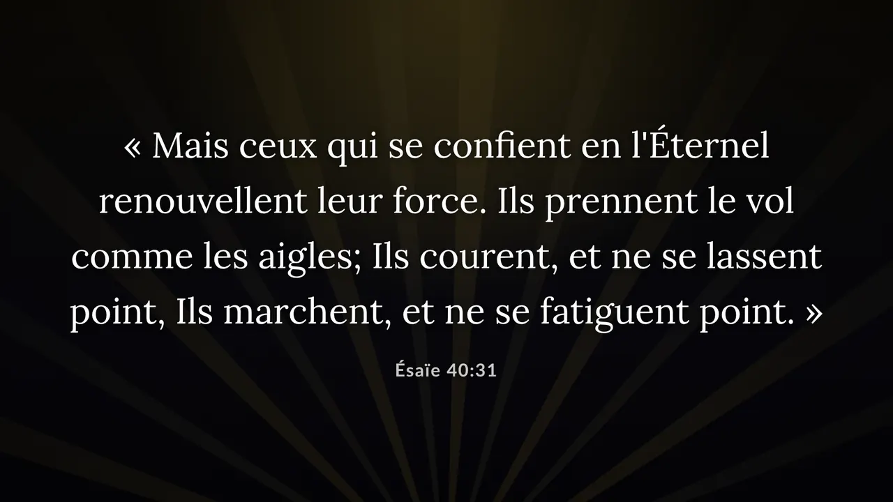
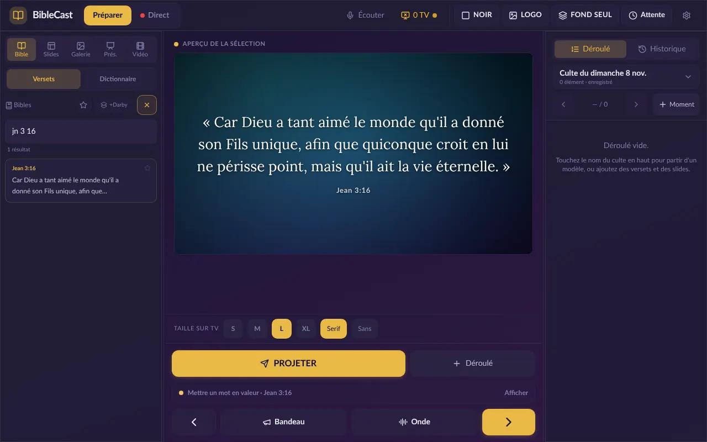
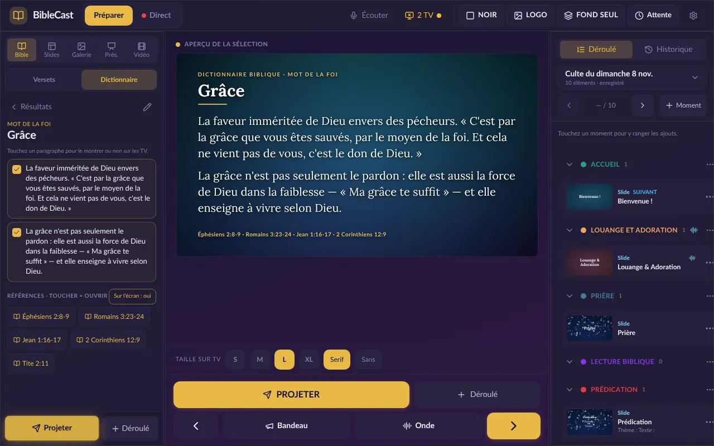
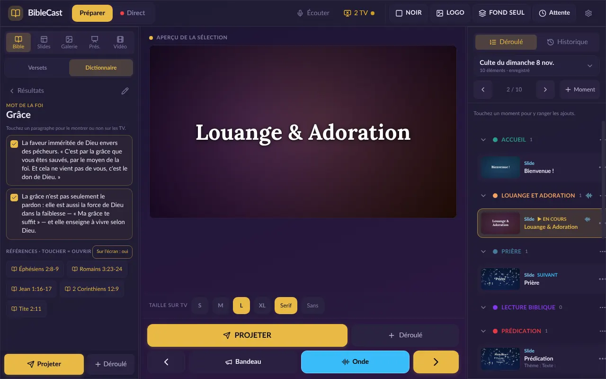
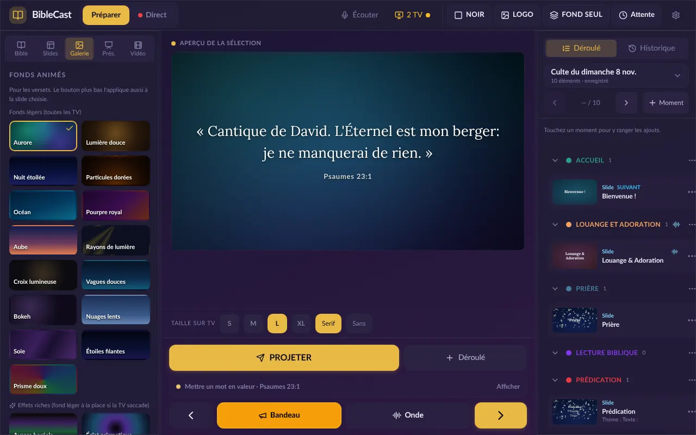
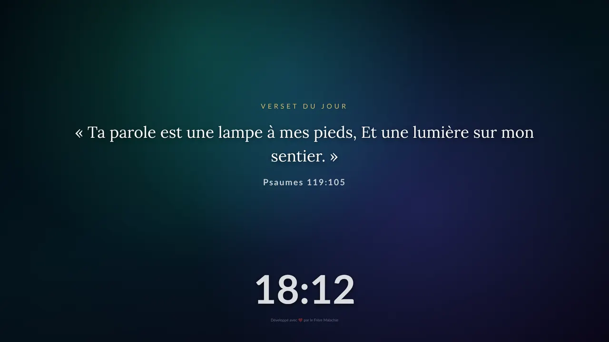

Pour commencer
- 1 tablette Android (Android 7 ou plus), même d'entrée de gamme
- 1 TV Android (Android 5 ou plus)
- 1 boîtier Wi-Fi, sans Internet (voir plus bas)
Petite salle, cellule de maison, groupe de prière.
BibleCast transforme une simple tablette Android en régie de culte. Versets, déroulé, annonces et louange s'affichent sur une ou deux TV, sans câble à travers la salle et sans connexion Internet.








Beaucoup d'assemblées se réunissent dans une salle louée, une cour ou un local partagé. Pas de place pour un ordinateur et un vidéoprojecteur, pas d'Internet fiable, et un budget qui va d'abord à l'œuvre. BibleCast a été conçu pour ces églises-là, et il est offert à toutes.
« Écris la prophétie : Grave-la sur des tables, Afin qu'on la lise couramment. »Habacuc 2:2
À gauche, ce que voit la personne à la régie. À droite, ce que voit l'assemblée. Touchez une fonction pour la découvrir.
Tapez jn 3 16, ps 23 ou quelques mots : le verset apparaît. Un double-toucher l'envoie sur les TV.
Exportez votre PowerPoint en PDF, ouvrez-le dans BibleCast et passez les pages une à une. Fonctionne aussi avec des images.
Projetez une vidéo de la tablette. Préparez-la avant le culte : elle est copiée sur les TV et démarre sans attente.
Le micro de la tablette entend « Jean trois seize » et propose le verset tout de suite, sans Internet.
Le verset sur une TV, les annonces sur l'autre. Ou les deux TV ensemble, au choix.
Retrouvez ce qui a été projeté, et rouvrez un culte enregistré pour le réutiliser.
À l'allumage, la TV ouvre BibleCast et retrouve la tablette toute seule. La télécommande peut aussi avancer les slides.
C'est la vraie application. La tablette et la TV sont reliées dans votre navigateur : touchez un verset à gauche, puis « Projeter », et regardez la TV à droite.
Environ 10 Mo à charger. Mieux sur ordinateur ou tablette.

La TV s'allume quand la démo démarre.
Pas d'ordinateur, pas de vidéoprojecteur, pas d'abonnement Internet. Commencez avec ce que vous avez, ajoutez une deuxième TV plus tard.
Petite salle, cellule de maison, groupe de prière.
Tout le monde voit l'écran, du premier rang au fond de la salle.
Réutilisez une vieille TV au lieu d'en acheter une neuve.
Ces petits dongles Miracast (vendus comme « HDMI sans fil 4K ») créent leur propre Wi-Fi. On ne s'en sert pas pour « caster » : on le branche juste sur le port USB de la TV, qui l'alimente. La tablette et les TV se connectent à son Wi-Fi, et c'est tout.
Un petit routeur 4G ou un point d'accès Wi-Fi fonctionne aussi sans carte SIM ni forfait. Mais il faut le recharger avant chaque culte ou le brancher sur une prise, donc un câble de plus.
Deux applications : une pour la tablette, une pour chaque TV. Elles ne sont pas sur le Play Store : on les installe directement, c'est normal et sans danger.
Scannez le code QR ci-dessus avec la tablette, ou ouvrez l'adresse dans Chrome. Le fichier BibleCast-Tablette.apk se télécharge.
Ouvrez le fichier. Android demande l'autorisation pour les « sources inconnues » : touchez Paramètres, activez l'autorisation, puis revenez.
Paramètres → Applications → Chrome → Installer des applis inconnues
Touchez Installer. Si Play Protect affiche un avertissement, choisissez « Installer quand même » : l'app n'est simplement pas sur le Play Store.
Connectez la tablette au Wi-Fi du dongle (ou du routeur). Android peut dire « pas d'Internet » : choisissez de rester connecté.
La méthode la plus simple : copiez BibleCast-TV.apk sur une clé USB depuis un ordinateur ou un téléphone, puis branchez la clé sur la TV.
Ouvrez la clé avec le gestionnaire de fichiers de la TV (ou installez « File Commander » / « X-plore » depuis le Play Store) et sélectionnez le fichier.
Si la TV a Internet un moment, installez l'app gratuite Downloader et tapez l'adresse courte idovic.github.io/biblecast/tv.
Autorisez les sources inconnues pour l'app utilisée, installez, puis connectez la TV au même Wi-Fi que la tablette. Au prochain allumage, BibleCast s'ouvre tout seul.
Paramètres → Sécurité → Sources inconnues
La TV affiche « Recherche de la tablette ». Elle trouve la tablette toute seule, sans adresse à taper.
Sur la tablette, l'icône TV en haut indique le nombre d'écrans reliés. Touchez-la pour les renommer (« Gauche », « Droite »).
Touchez le nom du culte dans le déroulé et partez d'un modèle. Ajoutez versets, slides et annonces dans chaque moment.
Le jour J, passez en mode Direct et avancez avec ▶. NOIR, LOGO et Attente sont toujours à portée de doigt.
Aucune donnée ne quitte l'église. BibleCast ne se connecte à aucun serveur : pas de compte, pas de publicité, pas de suivi. Les Bibles, le dictionnaire et vos cultes restent sur la tablette.
Oui, entièrement : pas d'abonnement, pas de publicité, pas de version « premium ». Le code est libre (licence GPL-3.0), et il le restera.
Non. Android affiche ce message pour toute application qui ne vient pas du Play Store. Autorisez l'installation pour l'app qui ouvre le fichier (Chrome, le gestionnaire de fichiers ou Downloader), puis désactivez l'autorisation si vous le souhaitez. Le code de BibleCast est public : n'importe qui peut vérifier ce qu'il fait.
Branchez un boîtier Android TV (« TV box ») sur sa prise HDMI et installez BibleCast TV sur le boîtier. Ça marche aussi avec un vidéoprojecteur.
L'app est prévue pour une ou deux TV, et on peut en relier davantage sur le même Wi-Fi. Chaque TV peut afficher la même chose, ou un écran différent.
Louis Segond 1910 et Darby 1885, toutes deux dans le domaine public, ainsi qu'un dictionnaire biblique de 622 articles rédigé pour BibleCast. Les références du dictionnaire ont été vérifiées dans la Louis Segond, mais faites-le relire par vos responsables avant de l'utiliser en culte.
Il n'y a pas de recueil de chants intégré, car beaucoup d'églises chantent dans leur propre langue. Préparez vos chants en slides (avec un fond animé), ou importez-les depuis un PDF ou un PowerPoint exporté en PDF.
Le code est ouvert à tous sur GitHub. Vous pouvez l'adapter vous-même ou proposer votre idée : voir la section « Code source » ci-dessous.
Tout le code de BibleCast est public. Traduisez-le dans votre langue, ajoutez une Bible, adaptez-le à votre église et partagez vos améliorations.
# Récupérer le code git clone https://github.com/Idovic/biblecast cd biblecast/tablette # Installer et préparer Android npm install npm run sync:android # Puis Android Studio → Build APK
Écrivez au frère Malachie. Les retours des églises qui utilisent BibleCast aident à l'améliorer.